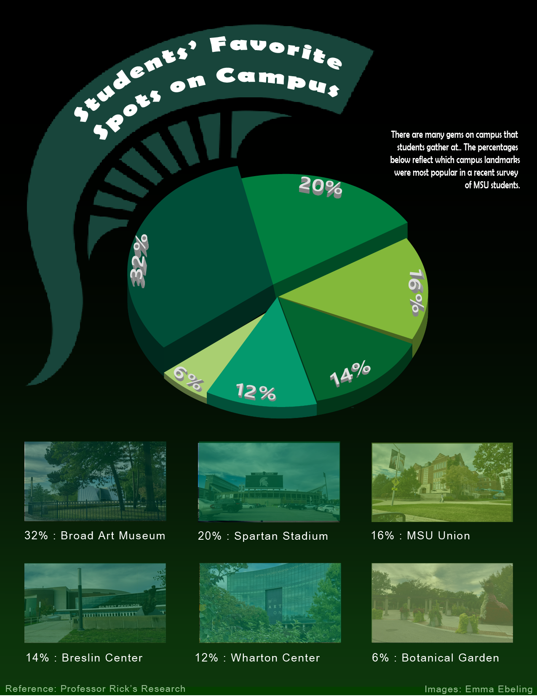

EGE Portfolio
About
Projects
Interdisciplinary
Email
← Back to project library
Information Visualization
Charts and diagrams that make quantitative stories understandable at a glance.
Open full image
